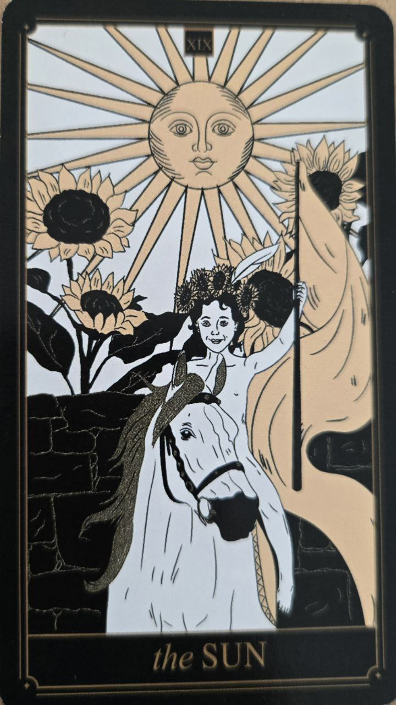

Slnko je kartou radosti, vitality a úspechu. Prináša jasnosť tam, kde predtým panovala neistota.
Je symbolom energie, sebavedomia a pozitívneho vývoja.
Karta predstavuje šťastie, optimizmus a naplnenie. Naznačuje obdobie, keď sa veci stávajú zrozumiteľnejšími a jednoduchšími.
Poukazuje na otvorenosť, úprimnosť a radosť zo života.
Žiarivé slnko osvetľuje celú scénu a odhaľuje všetko bez tieňov.
Často sa objavuje dieťa alebo mladá postava ako symbol spontánnosti a životnej energie.>
Slnko je jednou z najpozitívnejších kariet v tarote a často naznačuje obdobie spokojnosti a úspechu.